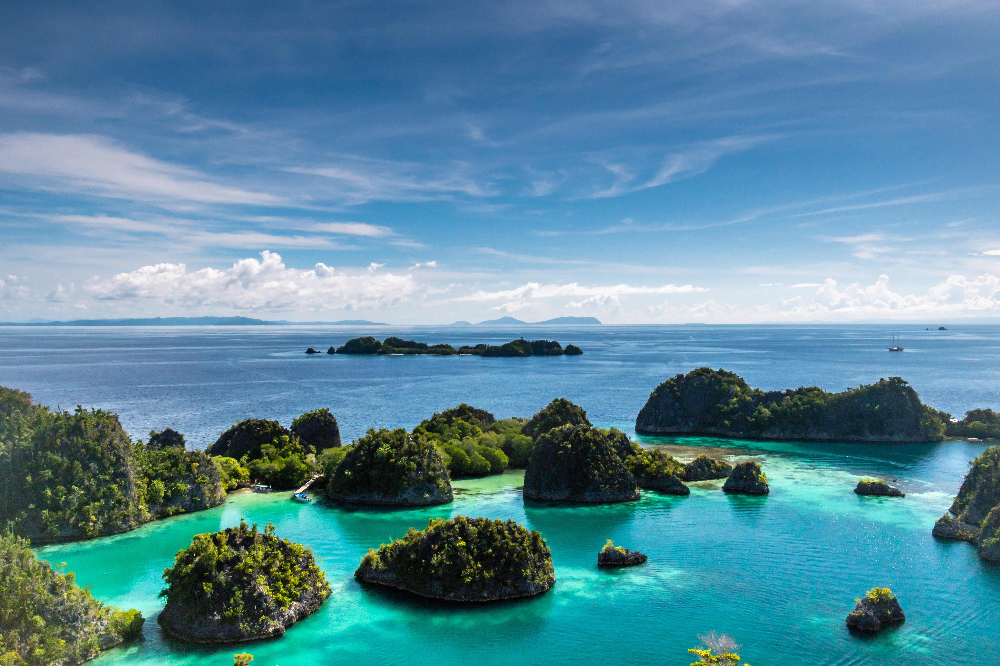
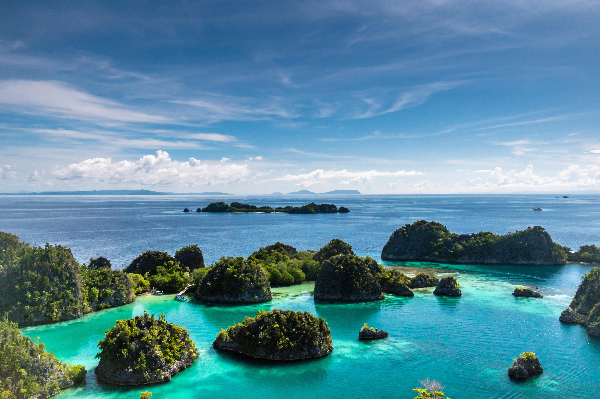
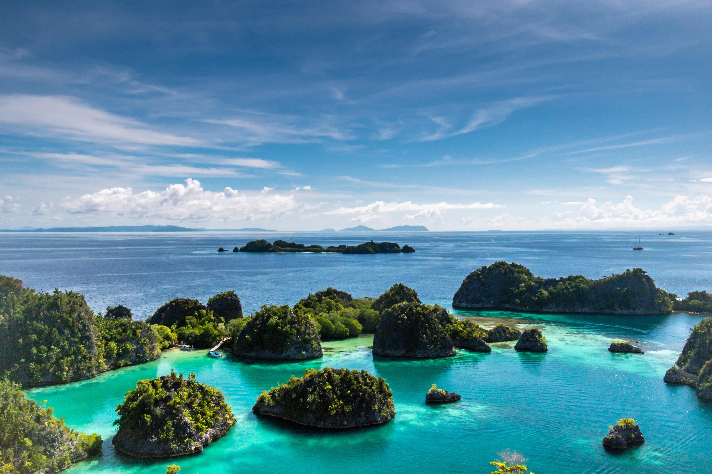
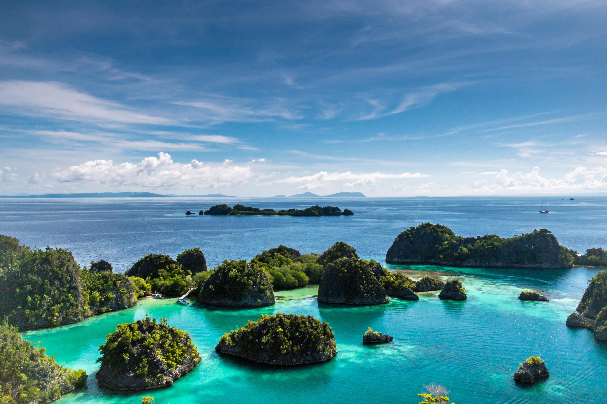

 

Wonderful Indonesia sendiri merupakan janji pariwisata Indonesia kepada dunia, secara filosofis. Mengapa disebut “Wonderful” karena Indonesia memang merupakan negeri yang menakjubkan baik manusia maupun alamnya. Sehingga dapat memberikan pengalaman menarik bagi wisatawan. Logonya berbentuk burung dengan kepak sayap membentang, melambangkan kedamaian dan mengingat burung merupakan hewan yang berpopulasi besar di Indonesia serta menjadi lambang bangsa. Rentang sayap burung melambangkan keterbukaan dan hasrat terbang jauh melintasi batas. Sayap terdiri dari lima warna lengkap dengan maknanya. Hijau melambangkan kreativitas, keselarasan dan alamiah. Ungu berarti imajinasi, keimanan, kesatuan lahir batin. Jingga merepresentasikan inovasi, semangat, pembaruan dan keterbukaan. Biru bermakna kesemestaan, kedamaian dan keteguhan. Terakhir, magenta mewakili keseimbangan, akal sehat dan sifat praktis.
Gunung Bromo adalah salah satu gunung api yang masih aktif di Indonesia. Gunung yang memiliki ketinggian 2.392 meter di atas permukaan laut ini merupakan destinasi andalan Jawa Timur. Gunung Bromo berdiri gagah dikelilingi kaldera atau lautan pasir seluas 10 kilometer persegi.
Gunung Bromo Go Unread MessagesKepulauan Raja Ampat merupakan rangkaian empat gugusan pulau yang berdekatan dan berlokasi di barat bagian Kepala Burung (Vogelkoop) Pulau Papua. Secara administrasi, gugusan ini berada di bawah Kabupaten Raja Ampat, Provinsi Papua Barat.
Raja Ampat Go Unread Messages
Danau Toba adalah sebuah danau tekto-vulkanik dengan ukuran panjang 100 kilometer dan lebar 30 kilometer yang terletak di Provinsi Sumatera Utara, Indonesia. Danau ini merupakan danau terbesar di Indonesia dan Asia Tenggara.
Danau Toba Go Unread Messages
Taman Nasional Gunung Leuser yang juga biasa disingkat dengan TNGL adalah salah satu Kawasan Pelestarian Alam di Indonesia yang memiliki luas sekitar 1.094.692 hektare. Secara administrasi hutan yang satu ini terletak di dua provinsi yaitu Provinsi Aceh dan Sumatera Utara. Hutan ini dominannya berada di Aceh Timur, Aceh Selatan, dan Langkat Sumatera Utara, dikenal dengan hasil kopi kelas dunia dan tembakau.
Gunung Leuser Go Unread Messages
Pulau Komodo adalah sebuah pulau yang terletak di Kepulauan Nusa Tenggara, berada di sebelah timur Pulau Sumbawa, yang dipisahkan oleh Selat Sape. Pulau Komodo dikenal sebagai habitat asli hewan komodo. Pulau ini termasuk salah satu kawasan Taman Nasional Komodo yang dikelola oleh Pemerintah Pusat.
Pulau Komodo Go Unread Messages
Kawah Ijen adalah sebuah danau kawah yang bersifat asam yang berada di puncak Gunung Ijen dengan kedalaman danau 200 meter dan luas kawah mencapai 5.466 Hektar. Danau kawah Ijen dikenal merupakan danau air asam kuat terbesar di dunia.
Kawah Ijen Go Unread Messages
Goa Jomblang merupakan gua vertikal yang bertipe collapse doline. Goa ini terbentuk akibat proses geologi amblesnya tanah beserta vegetasi yang ada di atasnya ke dasar bumi yang terjadi ribuan tahun lalu. Runtuhan ini membentuk sinkhole atau sumuran yang dalam bahasa Jawa dikenal dengan istilah luweng.
Goa Jomblang Go Unread Messages